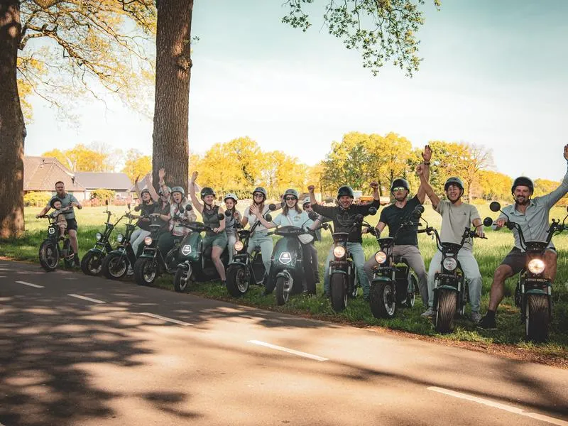

Crew mobility
E-Choppers, E-Fatbikes en E-Steps zodat je crew nooit hoeft te wachten op vervoer over het terrein.
Je crew loopt niet meer, die rijdt.

Hier komt straks de echte tekst te staan. Deze regels dienen alleen om te laten zien hoeveel ruimte een alinea inneemt en hoe de regels afbreken op verschillende schermformaten.
Deze alinea is met opzet iets langer, zodat je kunt zien wat er gebeurt als een blok meer tekst krijgt dan gemiddeld. De echte tekst schrijven we pas als de vormgeving vaststaat.
Zo zetten we crew mobility in
- 01
We kijken naar je terrein
Deze tekst staat er om de opmaak te kunnen beoordelen. De definitieve tekst volgt in de copywriting-ronde en wordt ongeveer even lang als dit.
- 02
De voertuigen staan er voor de opbouw
Vulzin om de lengte van dit blok te tonen. De echte tekst volgt later.
- 03
Accu wisselen tijdens het evenement
Deze tekst staat er om de opmaak te kunnen beoordelen. De definitieve tekst volgt in de copywriting-ronde en wordt ongeveer even lang als dit.
- 04
Wij halen alles weer op
Deze korte tekst laat zien hoeveel ruimte er is. Nog niet definitief.


Zo pakte dat uit
Hier komt een citaat van een organisator over hoeveel tijd dit scheelt op een groot terrein.
Klaar om je event in beweging te zetten?
Vertel ons om wat voor evenement het gaat en wat je nodig hebt. We denken mee over de juiste mix en komen met een passend voorstel.